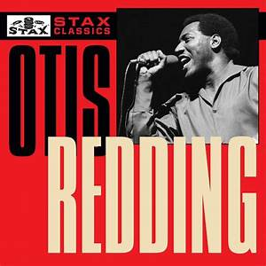

- 


Otis Redding
Otis Redding's third album, and his first fully realized album, presents his talent unfettered, his direction clear, and his confidence emboldened, with fully half the songs representing a reach that extended his musical grasp.
The Bar-Kays
"Soul Finger" is a song released on 14 April 1967 as the band's first single by Stax Records on the Volt Records label. Composed by the band while they were rehearsing with Norman West to perform a cover of J.J. Jackson's "But It's Alright", the song begins with the melody of the popular children's song "Mary Had a Little Lamb".
Isaac Hayes
Hot Buttered Soul is the second studio album by American soul musician Isaac Hayes. Released in 1969, it is recognized as a landmark in soul music. Recorded with The Bar-Kays, the album features four lengthy track that demonstrate the talent of Isaac Hayes and his rise to fame.
Sam and Dave
The Very Best of Sam & Dave contains all of Sam & Dave's Top 40 hits, including "You Don't Know Like I Know," "Hold On, I'm Comin'," "Said I Wasn't Gonna Tell Nobody," "You Got Me Hummin'," "When Something Is Wrong with My Baby," "Soothe Me," "Soul Man. It's an expertly compiled, concise collection that contains everything you need to know.
Rufus and Carla Tom
Rufus and Carla was the moniker Stax Records used when releasing duets by Rufus Thomas and daughter Carla Thomas. They have the distinction of sharing the company's first hit "Cause I Love You" when Stax was briefly known as Satellite Records.[1] Another hit was their version of "The Night Time Is the Right Time".
Booker T & the MG's
In 1970, the quartet applied their oft-imitated signature sound to some surprising source material: the Beatles’ Abbey Road. Abbey Road is a lot of things – trippy, bold, lush, joyous – but one thing it isn’t is funky. You’d never know that listening to McLemore Avenue, though. The band turns the songs on their head, wringing out fiery grooves from every note.